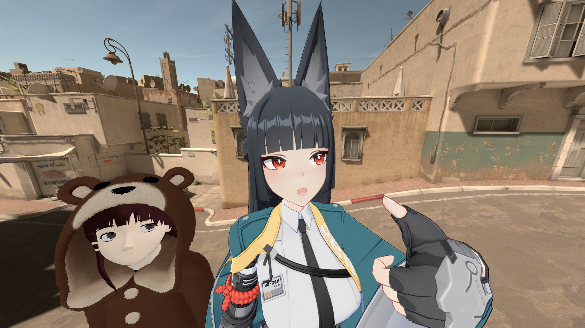
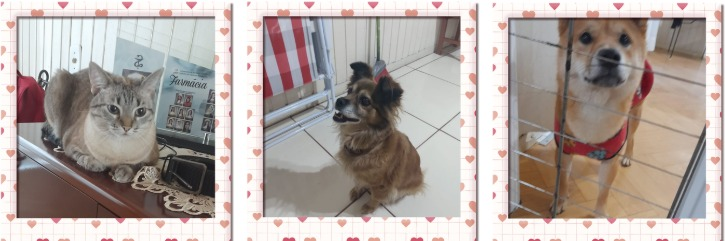

Se Liga Na Playlist Do Pai
Deseja avaliar a playlist??
Meu top 3 melhores musicas
Olá eu me chamo Rafael Garcia de Oliveira, eu tenho 19 anos e eu sou Estudante de ADS
na universidade de Passo Fundo a famosa UPF
ദ്ദി(˵ •̀ ᴗ - ˵)✧
Esse Cara aqui sou eu, e esse maluco aqui junto comigo é meu amigo Mio


Eu sou uma pessoa calma amante de jogos, livros e musicas, meus jogos
preferidos sao Jogos de Turno, Hack and Slash e SoulsLikes, mas eu sempre gosto de experimentar,
entao sempre estou aberto a recomendações ou apenas um papo legal
De livros favoritos eu gosto da trilogia de livros senhor dos anéis ou
tambem uma das minhas grandes paixões o grande horror cósmico que são os
livros de um dos meus autores preferidos, o "H.P Lovecraft". Eu deicidi
começar a escrever neste blog para ver o meu progresso em relação ao meu
aprendizado com a programação em geral e espero evoluir diariamente
Alem disso sou um amante de animais, eu tenho uma gata e uma cachorra e outro cachorro que é praticamente meu,
o nome em ordem dos meliantes sao...."a Gata Jenny","a vira lata Glorinha", e por ultimo o riquinho "Shiba Inu
Shiro"


